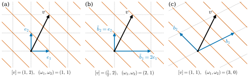

1.4 Change of Basis and Transformation of Components
Goals
- change-of-basis matrix \(B\)를 쓰고, basis를 바꿀 때 벡터의 성분은 \(B^{-1}\)로, covector의 성분은 \(B\)로 변한다는 것을 증명할 수 있다.
- contravariant와 covariant라는 말의 뜻을 알고, 위·아래 첨자 규약(Remark 1.4.9)으로 식이 맞는지 점검할 수 있다.
- \(\omega(v) = \sum_i \omega_i v^i\)가 basis에 무관한 이유를 성분의 변환으로 설명할 수 있다.
- linear map의 행렬이 \(C^{-1}AB\)로 변함을 보이고, trace처럼 basis에 무관한 양을 찾을 수 있다.
Prerequisites
- Theorem 1.1.13, Definition 1.1.14 (components), Example 1.1.15 (running basis)
- Definition 1.2.13 (matrix of a linear map), Proposition 1.2.14, Theorem 1.2.16 (composition and matrix multiplication)
- Definition 1.3.4 (dual basis), Theorem 1.3.5, Equation (1.3.4), Example 1.3.9 (polar coordinates basis)
Motivation
Section 1.3에서 basis \(\mathcal{B} = (b_i)\)를 하나 고르면 벡터는 성분 \(v^i = \beta^i(v)\)를, covector는 성분 \(\omega_i = \omega(b_i)\)를 갖게 되었다. 두 성분 모두 basis에 의존한다. 그러면 basis를 다른 것으로 바꿀 때 성분은 어떻게 바뀌는가? 이것이 Section 1.1의 두 번째 질문, “좌표를 다르게 고르면 무엇이 바뀌고 무엇이 바뀌지 않는가”이다.
단위를 바꾸는 상황을 떠올리면 답의 모양을 짐작할 수 있다. 길이가 \(3\,\mathrm{m}\)인 변위를 \(1\,\mathrm{m}\)짜리 basis vector로 재면 성분이 \(3\)이고, \(1\,\mathrm{cm}\)짜리 basis vector(길이가 \(1/100\))로 재면 성분이 \(300\)이다. basis vector가 작아지면 벡터의 성분은 커진다. 반대로 “\(1\,\mathrm{m}\)당 온도가 \(2\)도 오른다”는 기울기는 \(1\,\mathrm{m}\) basis vector에서 값이 \(2\)이고 \(1\,\mathrm{cm}\) basis vector에서 값이 \(0.02\)이다. basis vector가 작아지면 covector의 성분도 작아진다. 그리고 둘을 곱한 온도 변화 \(3 \times 2 = 300 \times 0.02 = 6\)은 단위와 상관없이 같다. 이 절은 이 관찰을 일반적인 change of basis에서 정확한 정리로 만든다.

Change-of-Basis Matrices
이 절에서 \(V\)는 \(n\)-dimensional vector space이고, \(\mathcal{B} = (b_1, \dots, b_n)\)을 “옛 basis”, \(\tilde{\mathcal{B}} = (\tilde b_1, \dots, \tilde b_n)\)을 “새 basis”라 부른다. 새 basis에 대한 것에는 모두 물결표를 붙인다: 성분 \(\tilde v^j\), \(\tilde\omega_j\), dual basis \(\tilde\beta^j\).
Definition 1.4.1 (change-of-basis matrix). 새 basis vector를 옛 basis로 전개한 식을
이라 할 때, \(i\)행 \(j\)열의 성분이 \(B^i_j\)인 \(n \times n\) 행렬 \(B\)를 \(\mathcal{B}\)에서 \(\tilde{\mathcal{B}}\)로의 change-of-basis matrix(기저변환 행렬)이라 한다. \(B\)의 \(j\)번째 열은 \(\tilde b_j\)의 옛 성분 \([\tilde b_j]_{\mathcal{B}}\)이다.
(1.4.1)을 Definition 1.2.13과 비교하면 \(B\)는 identity map의 행렬이다: \(B = [\id_V]^{\mathcal{B}}_{\tilde{\mathcal{B}}}\). identity map은 isomorphism이므로 Corollary 1.2.17에 의해 \(B\)는 invertible이다. 벡터는 그대로 두고 이름표(basis)만 바꾸는 것이므로 identity map이 나오는 것이 자연스럽다.
Example 1.4.2. (a) \(\R^n\)에서 옛 basis가 standard basis \(\mathcal{E}\)이면 \(\tilde b_j\)의 성분은 \(\tilde b_j\) 자신이므로, \(B\)는 열이 \(\tilde b_1, \dots, \tilde b_n\)인 행렬이다. 기준 basis \(\mathcal{B}\)로 바꾸는 경우 \(b_1 = 2e_1 + e_2\), \(b_2 = -e_1 + e_2\)이므로 \(B = \begin{pmatrix} 2 & -1 \\ 1 & 1 \end{pmatrix}\)이고, 이것은 (1.2.5)의 \(B\)와 같다.
(b) (늘이기) \(\tilde b_1 = 2e_1\), \(\tilde b_2 = e_2\)이면 \(B = \begin{pmatrix} 2 & 0 \\ 0 & 1 \end{pmatrix}\)이다(Figure 1.4.1(b)).
(c) (순서 바꾸기) \(\tilde b_1 = b_2\), \(\tilde b_2 = b_1\)이면 \(B = \begin{pmatrix} 0 & 1 \\ 1 & 0 \end{pmatrix}\)이다.
Non-example 1.4.3. (a) 새 basis vector를 행으로 늘어놓은 \(\begin{pmatrix} 2 & 1 \\ -1 & 1 \end{pmatrix}\)은 \(\mathcal{E}\)에서 \(\mathcal{B}\)로의 change-of-basis matrix가 아니다. 그 transpose이다. 이 행렬로 성분을 바꾸면 틀린 답이 나온다. (b) \((b_1, 2b_1)\)처럼 basis가 아닌 목록으로는 change-of-basis matrix를 만들 수 없다. 옛 basis를 \(\mathcal{E}\)로 두고 형식적으로 (1.4.1)을 써서 만든 \(\begin{pmatrix} 2 & 4 \\ 1 & 2 \end{pmatrix}\)은 invertible하지 않고, 이 목록에 대한 “성분”은 정의되지 않는다(Non-example 1.1.16).
basis를 두 번 바꾸거나 되돌리는 경우는 Theorem 1.2.16에서 바로 나온다. Section 1.6에서 orientation을 정의할 때 이 명제를 쓴다.
Proposition 1.4.4 (composition of changes of basis). \(\mathcal{B}, \tilde{\mathcal{B}}, \hat{\mathcal{B}}\)이 \(V\)의 basis이고, \(\mathcal{B}\)에서 \(\tilde{\mathcal{B}}\)로의 change-of-basis matrix가 \(B\), \(\tilde{\mathcal{B}}\)에서 \(\hat{\mathcal{B}}\)로의 change-of-basis matrix가 \(C\)라 하자.
- (a) \(\mathcal{B}\)에서 \(\mathcal{B}\) 자신으로의 change-of-basis matrix는 \(I\)이다.
- (b) \(\mathcal{B}\)에서 \(\hat{\mathcal{B}}\)로의 change-of-basis matrix는 \(BC\)이다.
- (c) \(\tilde{\mathcal{B}}\)에서 \(\mathcal{B}\)로의 change-of-basis matrix는 \(B^{-1}\)이다.
Proof. change-of-basis matrix는 identity map의 행렬이다: \(B = [\id]^{\mathcal{B}}_{\tilde{\mathcal{B}}}\), \(C = [\id]^{\tilde{\mathcal{B}}}_{\hat{\mathcal{B}}}\). (a)는 Corollary 1.2.17의 증명 첫 줄이다. (b) \(\id = \id \circ \id\)에 Theorem 1.2.16을 쓰면 \([\id]^{\mathcal{B}}_{\hat{\mathcal{B}}} = [\id]^{\mathcal{B}}_{\tilde{\mathcal{B}}}\,[\id]^{\tilde{\mathcal{B}}}_{\hat{\mathcal{B}}} = BC\)이다. (c) \(\tilde{\mathcal{B}}\)에서 \(\mathcal{B}\)로의 행렬을 \(B'\)이라 하면, (b)를 \(\mathcal{B} \to \tilde{\mathcal{B}} \to \mathcal{B}\)와 \(\tilde{\mathcal{B}} \to \mathcal{B} \to \tilde{\mathcal{B}}\)에 쓰고 (a)를 쓰면 \(BB' = I\), \(B'B = I\)이다. 따라서 \(B' = B^{-1}\)이다.
Transformation of Vector and Covector Components
Theorem 1.4.5 (transformation of vector components). \(\mathcal{B}\)에서 \(\tilde{\mathcal{B}}\)로의 change-of-basis matrix가 \(B\)이면, 모든 \(v \in V\)에 대하여
이다. 행렬로 쓰면 \([v]_{\mathcal{B}} = B\,[v]_{\tilde{\mathcal{B}}}\), \([v]_{\tilde{\mathcal{B}}} = B^{-1}[v]_{\mathcal{B}}\)이다.
이 정리가 말하는 것. basis vector는 \(B\)로 새것이 되는데((1.4.1)), 벡터의 성분은 \(B^{-1}\)로 새것이 된다. 방향이 거꾸로다.
Proof idea: 같은 벡터를 새 basis로 쓴 식에 (1.4.1)을 넣어 옛 basis로 다시 쓰고, 성분이 하나뿐이라는 사실(Theorem 1.1.13)을 쓴다.
Proof. 이 계산이 처음 나오므로 모든 단계를 쓴다. \(v = \sum_j \tilde v^j \tilde b_j\)에 (1.4.1)을 넣으면 \[ v = \sum_{j=1}^{n} \tilde v^j \tilde b_j = \sum_{j=1}^{n} \tilde v^j \Big(\sum_{i=1}^{n} B^i_j\, b_i\Big) = \sum_{i=1}^{n} \Big(\sum_{j=1}^{n} B^i_j\, \tilde v^j\Big) b_i \] 이다. 마지막 등호는 유한합의 순서를 바꾸고 \(b_i\)로 묶은 것이다. 한편 \(v = \sum_i v^i b_i\)이다. Theorem 1.1.13에 의해 \(\mathcal{B}\)-성분은 하나뿐이므로 \(v^i = \sum_j B^i_j \tilde v^j\)이다. 이것이 (1.4.2)의 첫 식이고, 행렬로 쓰면 \([v]_{\mathcal{B}} = B[v]_{\tilde{\mathcal{B}}}\)이다. 양변에 \(B^{-1}\)을 곱하면 둘째 식이다. (같은 결과를 Proposition 1.2.14를 \(T = \id\)에 써서 한 줄로 얻을 수도 있다: \([v]_{\mathcal{B}} = [\id]^{\mathcal{B}}_{\tilde{\mathcal{B}}}[v]_{\tilde{\mathcal{B}}}\).)
Theorem 1.4.6 (transformation of covector components and the dual basis). \(\mathcal{B}\)에서 \(\tilde{\mathcal{B}}\)로의 change-of-basis matrix가 \(B\)이고 \((\beta^i)\), \((\tilde\beta^j)\)가 각각의 dual basis라 하자. 모든 \(\omega \in V^*\)에 대하여
이다. covector의 성분을 행벡터로 쓰면 \((\tilde\omega_1, \dots, \tilde\omega_n) = (\omega_1, \dots, \omega_n)\,B\)이다.
이 정리가 말하는 것. covector의 성분은 basis vector와 같은 행렬 \(B\)로 변하고((1.4.1)과 비교), dual basis는 벡터의 성분과 같은 \(B^{-1}\)로 변한다.
Proof idea: covector의 성분은 basis vector에서의 값이므로, basis vector가 변하는 대로 따라 변한다.
Proof. Theorem 1.3.5에 의해 \(\tilde\omega_j = \omega(\tilde b_j)\)이다. (1.4.1)과 \(\omega\)의 linearity에서 \[ \tilde\omega_j = \omega\Big(\sum_{i} B^i_j\, b_i\Big) = \sum_{i} B^i_j\, \omega(b_i) = \sum_{i} \omega_i\, B^i_j \] 이다. dual basis에 대해서는 \(\eta^j = \sum_i (B^{-1})^j_i \beta^i\)로 두고 \(\eta^j(\tilde b_k)\)를 계산한다. \(\beta^i(\tilde b_k) = \beta^i\big(\sum_l B^l_k b_l\big) = \sum_l B^l_k \delta^i_l = B^i_k\)이므로 \[ \eta^j(\tilde b_k) = \sum_{i} (B^{-1})^j_i\, B^i_k = (B^{-1}B)^j_k = \delta^j_k \] 이다. 즉 \((\eta^j)\)는 \(\tilde{\mathcal{B}}\)에 대해 (1.3.2)를 만족하고, 그런 covector는 하나뿐이므로(Definition 1.3.4) \(\eta^j = \tilde\beta^j\)이다.
Definition 1.4.7 (contravariant and covariant). basis를 \(B\)로 바꿀 때 (1.4.2)처럼 \(B^{-1}\)로 변하는 성분을 contravariant(반변) 성분, (1.4.3)의 첫 식처럼 basis vector와 같은 \(B\)로 변하는 성분을 covariant(공변) 성분이라 한다. 벡터의 성분은 contravariant 성분이고 covector의 성분은 covariant 성분이다.
“contravariant”는 basis와 반대로 변한다는 뜻이고, “covariant”는 basis와 함께 변한다는 뜻이다. 예를 들어 Figure 1.4.1(b)에서 \(B = \diag(2, 1)\)이므로 \(\tilde v^1 = \tfrac12 v^1\)(contravariant), \(\tilde\omega_1 = 2\omega_1\)(covariant)이다. 한편 “이 성분이 벡터의 것인가 covector의 것인가”를 따지는 non-example로, 벡터 두 개의 성분을 곱해 더한 \(\sum_i v^i w^i\)를 보자. 이것은 contravariant 성분끼리의 짝이어서 basis에 따라 값이 달라진다(Exercise 1.4.3(b)). contravariant와 covariant가 짝을 이룰 때에만 변환이 서로 상쇄된다.
Proposition 1.4.8 (\(\sum_i \omega_i v^i\) is independent of the basis). 모든 \(\omega \in V^*\), \(v \in V\)와 두 basis \(\mathcal{B}, \tilde{\mathcal{B}}\)에 대하여 \(\sum_j \tilde\omega_j \tilde v^j = \sum_i \omega_i v^i\)이다.
Proof. 두 값이 모두 \(\omega(v)\)라는 것은 (1.3.4)에서 이미 안다. 여기서는 그것을 변환 법칙만으로 확인해 두자. 뒤에서 텐서의 성분을 다룰 때 같은 계산이 되풀이된다. (1.4.3)과 (1.4.2)에서 \[ \begin{aligned} \sum_j \tilde\omega_j \tilde v^j &= \sum_j \Big(\sum_i \omega_i B^i_j\Big)\Big(\sum_k (B^{-1})^j_k v^k\Big) \\ &= \sum_{i,k} \omega_i \Big(\sum_j B^i_j (B^{-1})^j_k\Big) v^k \\ &= \sum_{i,k} \omega_i\, \delta^i_k\, v^k = \sum_i \omega_i v^i \end{aligned} \] 이다. 셋째 등호는 \(BB^{-1} = I\)이다. covariant 성분의 \(B\)와 contravariant 성분의 \(B^{-1}\)이 만나 사라졌다.
Remark 1.4.9 (index placement convention). 이 study set 전체에서 첨자의 위치를 다음과 같이 쓴다. 이 규약은 여기서 도입하고 끝까지 유지한다.
- (a) basis vector는 아래첨자 \(b_i\), 벡터의 성분은 위첨자 \(v^i\). 성분은 contravariant이다.
- (b) dual basis는 위첨자 \(\beta^i\), covector의 성분은 아래첨자 \(\omega_i\). 성분은 covariant이다.
- (c) linear map과 change of basis의 행렬 성분은 \(A^i_j\)로 쓴다. 위첨자는 행(도착 쪽), 아래첨자는 열(출발 쪽)이다. Kronecker delta도 \(\delta^i_j\)이다.
- (d) 균형 규칙. 합은 같은 문자가 한 번은 위, 한 번은 아래에 나올 때만 한다. 합하고 남은 첨자(자유 첨자)는 등식의 양변에서 위치가 같아야 한다. 예를 들어 \(\tilde v^j = \sum_i (B^{-1})^j_i v^i\)에서 \(i\)는 위·아래 짝으로 더해지고, 자유 첨자 \(j\)는 양변에서 모두 위에 있다.
- (e) 합 기호 \(\sum\)는 Chapter 13에서 아인슈타인 합 규약을 도입하기 전까지 생략하지 않는다.
- (f) 뒤의 장에서 coordinate functions는 위첨자 \(x^i\), 좌표벡터는 아래첨자 \(\partial_i\), 좌표 1-형식은 위첨자 \(dx^i\)로 쓴다. (a), (b)와 같은 규칙이다.
균형 규칙이 성립하도록 쓰면, Proposition 1.4.8의 계산처럼 짝을 이룬 첨자에서 \(B\)와 \(B^{-1}\)이 상쇄되어 결과가 basis에 무관하다. 그래서 첨자의 위치만 보고도 식이 틀렸는지 상당 부분 점검할 수 있다(Exercise 1.4.4). 위첨자는 거듭제곱이 아니다. 제곱은 \((x^2)^2\)처럼 괄호로 쓴다.
Worked Examples
Example 1.4.10 (from the standard basis to the running basis). 옛 basis를 \(\mathcal{E} = (e_1, e_2)\), 새 basis를 기준 basis \(\mathcal{B} = (b_1, b_2)\)로 두자. Example 1.4.2(a)에서 \(B = \begin{pmatrix} 2 & -1 \\ 1 & 1 \end{pmatrix}\)이고 Example 1.2.18에서 \(B^{-1} = \tfrac13\begin{pmatrix} 1 & 1 \\ -1 & 2 \end{pmatrix}\)이다. (정리를 쓸 때 옛 basis 자리에 \(\mathcal{E}\), 새 basis 자리에 \(\mathcal{B}\)를 넣는다. 새 성분에는 물결표 대신 “\(\mathcal{B}\)-성분”이라는 말을 쓴다.)
벡터. \(v = (1, 2)\)의 옛 성분은 \((1, 2)\)이다. (1.4.2)에서 새 성분은 \[ [v]_{\mathcal{B}} = B^{-1}\begin{pmatrix} 1 \\ 2 \end{pmatrix} = \frac13\begin{pmatrix} 1 \cdot 1 + 1 \cdot 2 \\ (-1) \cdot 1 + 2 \cdot 2 \end{pmatrix} = \begin{pmatrix} 1 \\ 1 \end{pmatrix} \] 이다. Example 1.1.15에서 직접 풀어 얻은 것과 같다.
covector. \(\omega(x) = x^1 + x^2\)의 옛 성분은 \((\omega_1, \omega_2) = (\omega(e_1), \omega(e_2)) = (1, 1)\)이다. (1.4.3)에서 새 성분은 \[ (1,\ 1)\begin{pmatrix} 2 & -1 \\ 1 & 1 \end{pmatrix} = (1 \cdot 2 + 1 \cdot 1,\ \ 1 \cdot (-1) + 1 \cdot 1) = (3,\ 0) \] 이다. 직접 계산해도 \(\omega(b_1) = 2 + 1 = 3\), \(\omega(b_2) = -1 + 1 = 0\)이다. 즉 \(\omega = 3\beta^1\)이고, 그래서 \(\omega\)의 등위선이 \(\beta^1\)의 등위선과 평행하다 (Figure 1.3.1).
불변량. 옛 성분으로 \(1 \cdot 1 + 1 \cdot 2 = 3\), 새 성분으로 \(3 \cdot 1 + 0 \cdot 1 = 3\)이다. 둘 다 \(\omega(v) = 1 + 2 = 3\)이다(Proposition 1.4.8, Figure 1.4.1(a), (c)).
dual basis. (1.4.3)의 둘째 식에서 \(\beta^1 = \tfrac13(e^1 + e^2)\), \(\beta^2 = \tfrac13(-e^1 + 2e^2)\)로 \(B^{-1}\)의 행이고, Example 1.3.6과 같다.
Verification: verify/v-1-4-change-of-basis.py
Example 1.4.11 (polar coordinates basis). 점 \(p = (r\cos\theta, r\sin\theta)\)(\(r \gt 0\))에서 옛 basis \(\mathcal{E}\)를 Example 1.3.9의 polar coordinates basis \(\tilde b_1 = (\cos\theta, \sin\theta)\), \(\tilde b_2 = (-r\sin\theta, r\cos\theta)\)로 바꾸자. change-of-basis matrix \(B\)와 \(B^{-1}\)은 (1.3.8)이다.
벡터. (1.4.2)에서 \(v = (v^1, v^2)\)의 새 성분은 \[ \tilde v^1 = \cos\theta\, v^1 + \sin\theta\, v^2, \qquad \tilde v^2 = \frac{-\sin\theta\, v^1 + \cos\theta\, v^2}{r} \] 이다. \(\tilde v^1\)은 \(v\)의 “바깥쪽으로 가는 빠르기”, \(\tilde v^2\)는 “각이 늘어나는 빠르기”다. 예를 들어 \(r = 2\), \(\theta = \pi/2\)(점 \(p = (0, 2)\))에서 \(v = e_1\)이면 \(\tilde v = (0, -\tfrac12)\)이다. 원의 꼭대기에서 오른쪽으로 움직이면 반지름은 그대로이고 각은 줄어든다. 확인: \(-\tfrac12\tilde b_2 = -\tfrac12(-2, 0) = (1, 0)\).
covector. 둘째 좌표를 읽는 covector \(e^2\)의 옛 성분은 \((0, 1)\)이고, (1.4.3)에서 새 성분은 \[ (0,\ 1)\,B = (\sin\theta,\ \ r\cos\theta) \] 이다. 이 두 수는 \(y = r\sin\theta\)의 \(r\)과 \(\theta\)에 대한 partial derivative \(\partial y/\partial r\), \(\partial y/\partial\theta\)와 같다. 같은 방법으로 \(e^1\)의 새 성분은 \((\cos\theta, -r\sin\theta) = (\partial x/\partial r, \partial x/\partial\theta)\)이다(\(x = r\cos\theta\)).
Verification: verify/v-1-4-change-of-basis.py
How the Matrix of a Linear Map Changes
Theorem 1.4.12 (transformation of a matrix). \(T\colon V \to W\)가 linear map이고, \(V\)의 basis를 \(\mathcal{B}\)에서 \(\tilde{\mathcal{B}}\)로(행렬 \(B\)), \(W\)의 basis를 \(\mathcal{C}\)에서 \(\tilde{\mathcal{C}}\)로(행렬 \(C\)) 바꾸면
이다. 특히 \(T \in \End(V)\)이고 \(\mathcal{C} = \mathcal{B}\), \(\tilde{\mathcal{C}} = \tilde{\mathcal{B}}\)이면 \([T]_{\tilde{\mathcal{B}}} = B^{-1}[T]_{\mathcal{B}}B\)이다.
이 정리가 말하는 것. 행렬 성분 \(A^i_j\)의 위첨자(도착 쪽)는 contravariant 성분처럼 \(C^{-1}\)을, 아래첨자(출발 쪽)는 covariant 성분처럼 \(B\)를 받는다. 균형 규칙과도 맞는다.
Proof idea: \(T\)를 \(\id_W \circ T \circ \id_V\)로 쓰고, 세 map에 서로 다른 basis를 붙여 Theorem 1.2.16을 쓴다. 양 끝의 identity map의 행렬이 change-of-basis matrix이다.
Proof. \(T = \id_W \circ T \circ \id_V\)에 Theorem 1.2.16을 basis \(\tilde{\mathcal{B}} \to \mathcal{B} \to \mathcal{C} \to \tilde{\mathcal{C}}\)의 순서로 쓰면 \[ [T]^{\tilde{\mathcal{C}}}_{\tilde{\mathcal{B}}} = [\id_W]^{\tilde{\mathcal{C}}}_{\mathcal{C}}\,[T]^{\mathcal{C}}_{\mathcal{B}}\,[\id_V]^{\mathcal{B}}_{\tilde{\mathcal{B}}} \] 이다. \([\id_V]^{\mathcal{B}}_{\tilde{\mathcal{B}}} = B\)이고, Proposition 1.4.4(c)에 의해 \([\id_W]^{\tilde{\mathcal{C}}}_{\mathcal{C}} = C^{-1}\)이다. 성분식은 행렬곱을 풀어 쓴 것이다.
Corollary 1.4.13 (the trace is independent of the basis). \(T \in \End(V)\)이면 \(\tr [T]_{\mathcal{B}}\)는 basis \(\mathcal{B}\)를 어떻게 골라도 같다.
Proof. 먼저 \(n \times n\) 행렬 \(X, Y\)에 대해 \(\tr(XY) = \tr(YX)\)이다: \(\tr(XY) = \sum_i (XY)^i_i = \sum_i \sum_k X^i_k Y^k_i = \sum_k \sum_i Y^k_i X^i_k = \sum_k (YX)^k_k = \tr(YX)\)이다. Theorem 1.4.12에서 \([T]_{\tilde{\mathcal{B}}} = B^{-1}AB\)(\(A = [T]_{\mathcal{B}}\))이므로 \(\tr(B^{-1}(AB)) = \tr((AB)B^{-1}) = \tr A\)이다.
따라서 \(T \in \End(V)\)의 trace(대각합)을 아무 basis에서의 행렬의 trace \(\tr T = \tr[T]_{\mathcal{B}}\)로 정의할 수 있다. determinant도 같은 방식으로 linear map의 양이 된다 (Section 1.6). 반면 행렬 성분의 총합처럼 basis에 따라 달라지는 양은 linear map의 성질이 아니다(Exercise 1.4.3(e)).
Example 1.4.14 (a good basis simplifies the matrix). Example 1.2.7의 \(P\)는 standard basis에서 \(A = \tfrac12\begin{pmatrix} 1 & 1 \\ 1 & 1 \end{pmatrix}\)이다. 새 basis \(\tilde b_1 = (1, 1)\), \(\tilde b_2 = (1, -1)\)로 바꾸자. \(B = \begin{pmatrix} 1 & 1 \\ 1 & -1 \end{pmatrix}\)이고 \(B^2 = 2I\)이므로 \(B^{-1} = \tfrac12 B\)이다. 차례로 계산하면 \[ AB = \frac12\begin{pmatrix} 1 + 1 & 1 - 1 \\ 1 + 1 & 1 - 1 \end{pmatrix} = \begin{pmatrix} 1 & 0 \\ 1 & 0 \end{pmatrix}, \qquad B^{-1}(AB) = \frac12\begin{pmatrix} 1 + 1 & 0 \\ 1 - 1 & 0 \end{pmatrix} = \begin{pmatrix} 1 & 0 \\ 0 & 0 \end{pmatrix} \] 이다. 새 basis에서 \(P\)는 “첫 성분은 그대로, 둘째 성분은 \(0\)으로”라는 map이다. \(\tilde b_1\)은 \(\im P\)를, \(\tilde b_2\)는 \(\ker P\)를 span하기 때문이다 (Figure 1.2.1(b)). trace는 두 basis에서 모두 \(1\)이다.
Verification: verify/v-1-4-change-of-basis.py
Summary
- 새 basis를 옛 basis로 쓴 \(\tilde b_j = \sum_i B^i_j b_i\)의 행렬 \(B\)가 change-of-basis matrix이고, invertible이다. 합성은 곱 \(BC\), 되돌리기는 \(B^{-1}\)이다(Proposition 1.4.4).
- 벡터의 성분은 \(\tilde v^j = \sum_i (B^{-1})^j_i v^i\)로 반대로(contravariant), covector의 성분은 \(\tilde\omega_j = \sum_i \omega_i B^i_j\)로 함께(covariant) 변한다(Theorem 1.4.5, 1.4.6).
- contravariant와 covariant가 짝을 이루면 변환이 상쇄되어 \(\sum_i \omega_i v^i\)는 basis에 무관하다(Proposition 1.4.8).
- 위·아래 첨자의 균형 규칙이 이 상쇄를 눈에 보이게 해 준다(Remark 1.4.9). 이 규약을 study set 끝까지 쓴다.
- linear map의 행렬은 \(C^{-1}AB\)로 변하고, trace는 basis에 무관하다(Theorem 1.4.12, Corollary 1.4.13).
다음 절에서는 벡터의 길이와 각을 재는 도구, inner product를 다룬다. 두 벡터의 성분을 곱해 더한 \(\sum_i v^i w^i\)는 basis에 무관하지 않았다. basis에 무관하게 길이와 각을 재려면 vector space에 무엇을 더해야 하는가?
Exercises
Exercise 1.4.1 ★ \(\R^2\)의 standard basis를 \(\tilde b_1 = (1, 1)\), \(\tilde b_2 = (1, -1)\)로 바꾼다. \(B\)와 \(B^{-1}\)을 구하고, \(v = (3, 1)\)의 새 성분과 \(\omega = 2e^1 - e^2\)의 새 성분을 구하여라. 두 basis에서 \(\sum_i \omega_i v^i\)가 같음을 확인하여라.
Solution
\(B = \begin{pmatrix} 1 & 1 \\ 1 & -1 \end{pmatrix}\), \(B^{-1} = \tfrac12\begin{pmatrix} 1 & 1 \\ 1 & -1 \end{pmatrix}\)(Example 1.4.14). \([v]_{\tilde{\mathcal{B}}} = B^{-1}(3,1)^{\mathsf{T}} = \tfrac12(4, 2)^{\mathsf{T}} = (2, 1)^{\mathsf{T}}\). 확인: \(2(1,1) + (1,-1) = (3, 1)\). \((\tilde\omega_1, \tilde\omega_2) = (2, -1)B = (2 - 1,\ 2 + 1) = (1, 3)\). 확인: \(\omega(\tilde b_1) = 2 - 1 = 1\), \(\omega(\tilde b_2) = 2 + 1 = 3\). \(\sum \omega_i v^i\)는 옛 basis에서 \(2 \cdot 3 + (-1) \cdot 1 = 5\), 새 basis에서 \(1 \cdot 2 + 3 \cdot 1 = 5\)이다.
Exercise 1.4.2 ★ \(\lambda_1, \dots, \lambda_n \neq 0\)이고 \(\tilde b_j = \lambda_j b_j\)라 하자. \(\tilde v^j\), \(\tilde\omega_j\), \(\tilde\beta^j\)를 \(v^j\), \(\omega_j\), \(\beta^j\)로 나타내어라.
Solution
\(B = \diag(\lambda_1, \dots, \lambda_n)\), \(B^{-1} = \diag(1/\lambda_1, \dots, 1/\lambda_n)\)이다. (1.4.2)에서 \(\tilde v^j = v^j/\lambda_j\), (1.4.3)에서 \(\tilde\omega_j = \lambda_j\omega_j\), \(\tilde\beta^j = \beta^j/\lambda_j\)이다. (Figure 1.4.1(b)는 \(\lambda_1 = 2\), \(\lambda_2 = 1\)인 경우다.)
Exercise 1.4.3 ★ 참인지 거짓인지 판별하고 이유를 대어라. (a) basis를 바꾸면 벡터 \(v\) 자체가 바뀐다. (b) 두 벡터의 성분으로 만든 \(\sum_i v^i w^i\)는 basis에 무관하다. (c) \(\sum_i \omega_i v^i\)는 basis에 무관하다. (d) \(T \in \End(V)\)의 행렬의 trace는 basis에 무관하다. (e) \(T \in \End(V)\)의 행렬의 모든 성분의 합은 basis에 무관하다.
Solution
(a) 거짓. change-of-basis matrix는 identity map의 행렬이고, 바뀌는 것은 성분뿐이다.
(b) 거짓. \(\R^2\)에서 \(v = w = e_1\)이면 standard basis에서 \(\sum_i v^i w^i = 1\)이다. basis를 \((2e_1, e_2)\)로 바꾸면 성분이 \((\tfrac12, 0)\)이 되어 합이 \(\tfrac14\)이다.
(c) 참. Proposition 1.4.8. (d) 참. Corollary 1.4.13.
(e) 거짓. Example 1.4.14의 \(P\)는 standard basis에서 성분의 합이 \(2\)이지만, 새 basis에서는 \(1\)이다.
Exercise 1.4.4 ★ Remark 1.4.9의 균형 규칙에 맞는 식과 어긋나는 식을 가려라. 어긋나는 식은 무엇이 틀렸는지 말하여라. (a) \(\tilde v^j = \sum_i (B^{-1})^j_i v^i\) (b) \(\tilde\omega_j = \sum_i (B^{-1})^j_i\,\omega_i\) (c) \(\sum_i A^i_i\) (d) \(\sum_i v^i v^i\) (e) \(\tilde b_j = \sum_i B^i_j b_i\)
Solution
(a) 맞다. \(i\)가 위·아래로 짝을 이루고, 자유 첨자 \(j\)는 양변에서 위에 있다.
(b) 어긋난다. 합하는 \(i\)가 두 번 모두 아래에 있고, 자유 첨자 \(j\)가 좌변에서는 아래, 우변에서는 위에 있다. 올바른 식은 \(\tilde\omega_j = \sum_i \omega_i B^i_j\)이다.
(c) 맞다. 위·아래 짝으로 더하므로 basis에 무관한 수(trace)다.
(d) 어긋난다. \(i\)가 두 번 모두 위에 있다. Exercise 1.4.3(b)에서 보았듯 basis에 따라 값이 바뀐다.
(e) 맞다. (1.4.1)이다.
Exercise 1.4.5 ★ Example 1.4.11에서 \(r = 2\), \(\theta = \pi/3\)일 때 \(v = e_1\)의 새 성분과 \(\omega = e^1\)의 새 성분을 구하고, 두 basis에서 \(\omega(v)\)가 같음을 확인하여라.
Solution
\(\cos\theta = \tfrac12\), \(\sin\theta = \tfrac{\sqrt3}{2}\)이다. \(\tilde v^1 = \cos\theta = \tfrac12\), \(\tilde v^2 = -\sin\theta/r = -\tfrac{\sqrt3}{4}\)이다. \((\tilde\omega_1, \tilde\omega_2) = (1, 0)B = (\cos\theta, -r\sin\theta) = (\tfrac12, -\sqrt3)\)이다. 새 성분으로 \(\tfrac12 \cdot \tfrac12 + (-\sqrt3)(-\tfrac{\sqrt3}{4}) = \tfrac14 + \tfrac34 = 1\)이고, 옛 성분으로 \(e^1(e_1) = 1\)이다.
Exercise 1.4.6 ★★ 기준 basis \(\mathcal{B} = ((2,1), (-1,1))\)에서 basis \(\tilde{\mathcal{B}} = ((1,1), (1,-1))\)로의 change-of-basis matrix를 Proposition 1.4.4로 구하고, (1.4.1)로 확인하여라.
Hint
\(\mathcal{B} \to \mathcal{E} \to \tilde{\mathcal{B}}\)로 나누어 생각한다.
Solution
\(\mathcal{E}\)에서 \(\mathcal{B}\)로의 행렬은 \(B_1 = \begin{pmatrix} 2 & -1 \\ 1 & 1 \end{pmatrix}\), \(\mathcal{E}\)에서 \(\tilde{\mathcal{B}}\)로의 행렬은 \(B_2 = \begin{pmatrix} 1 & 1 \\ 1 & -1 \end{pmatrix}\)이다. Proposition 1.4.4(c)에 의해 \(\mathcal{B}\)에서 \(\mathcal{E}\)로의 행렬은 \(B_1^{-1}\)이고, (b)에 의해 \(\mathcal{B}\)에서 \(\tilde{\mathcal{B}}\)로의 행렬은 \[ B_1^{-1}B_2 = \frac13\begin{pmatrix} 1 & 1 \\ -1 & 2 \end{pmatrix}\begin{pmatrix} 1 & 1 \\ 1 & -1 \end{pmatrix} = \frac13\begin{pmatrix} 2 & 0 \\ 1 & -3 \end{pmatrix} \] 이다. 확인: \(\tfrac23 b_1 + \tfrac13 b_2 = (\tfrac43 - \tfrac13,\ \tfrac23 + \tfrac13) = (1, 1) = \tilde b_1\)이고 \(0 \cdot b_1 - b_2 = (1, -1) = \tilde b_2\)이다.
Exercise 1.4.7 ★★ \(\tr(XYZ) = \tr(YZX)\)(순환)임을 보여라. 그러나 \(\tr(XYZ) \neq \tr(YXZ)\)인 \(2 \times 2\) 행렬의 예를 들어라.
Solution
Corollary 1.4.13의 증명의 \(\tr(XY) = \tr(YX)\)를 \(X\)와 \(YZ\)에 쓰면 \(\tr(X(YZ)) = \tr((YZ)X)\)이다. 예: \(X = \begin{pmatrix} 1 & 0 \\ 0 & 0 \end{pmatrix}\), \(Y = \begin{pmatrix} 0 & 1 \\ 0 & 0 \end{pmatrix}\), \(Z = \begin{pmatrix} 0 & 0 \\ 1 & 0 \end{pmatrix}\)이면 \(YZ = \begin{pmatrix} 1 & 0 \\ 0 & 0 \end{pmatrix}\)이므로 \(XYZ = X\)이고 trace가 \(1\)이다. 한편 \(XZ = 0\)이므로 \(YXZ = 0\)이고 trace가 \(0\)이다.
Exercise 1.4.8 ★★★ \(T \in \End(V)\)의 행렬이 모든 basis에서 같다면 \(T = c\,\id_V\)인 실수 \(c\)가 있음을 보여라.
Hint
\(A = [T]_{\mathcal{B}}\)가 모든 invertible matrix \(B\)와 교환한다(\(AB = BA\)). 특별한 \(B\)를 대입한다.
Solution
basis \(\mathcal{B}\)를 하나 고정하고 \(A = [T]_{\mathcal{B}}\)라 하자. invertible matrix \(B\)마다 (1.4.1)로 새 basis를 만들 수 있고(열이 linearly independent이므로), Theorem 1.4.12에서 \(B^{-1}AB = A\), 즉 \(AB = BA\)이다.
대각행렬이다. \(k\)를 고정하고 \(B = \diag(1, \dots, 2, \dots, 1)\)(\(k\)번째만 \(2\))로 두면 \((AB)^i_k = 2A^i_k\), \((BA)^i_k = A^i_k\)(\(i \neq k\))이다. 따라서 \(i \neq k\)이면 \(A^i_k = 0\)이다.
대각성분이 같다. \(n \ge 2\)이고 \(k \neq 1\)이라 하자. \(E\)를 \((1, k)\) 성분만 \(1\)인 행렬이라 하면 \(E^2 = 0\)이므로 \(B = I + E\)는 invertible이고 \(B^{-1} = I - E\)이다. \(AB = BA\)에서 \(AE = EA\)이다. \(A\)가 대각행렬이므로 \(AE\)는 \((1,k)\) 성분만 \(A^1_1\)이고, \(EA\)는 \((1,k)\) 성분만 \(A^k_k\)이다. 따라서 \(A^1_1 = A^k_k\)이다.
그러므로 \(A = cI\)(\(c = A^1_1\))이고, 행렬이 같은 두 linear map은 같으므로(Proposition 1.2.4) \(T = c\,\id_V\)이다.